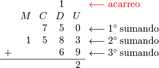

Realizar una suma
El procedimiento estándar para efectuar sumas de varios
números, llamados "sumandos", es el siguiente:
Los sumandos se colocan en filas sucesivas ordenando
las cifras en columnas, empezando por la derecha con
la cifra de las unidades(U), a la izquierda las
decenas(D), la siguiente las centenas(C), la siguiente
los millares(M), etc.
La suma de los números 750 + 1583 + 69 se ordenarían
de la siguiente forma:
Descripción:
Se suman en primer lugar las cifras de la columna de
las unidades según las tablas elementales, colocando
en el resultado la cifra de unidades que resulte;
cuando estas unidades sean más de 10 las decenas se
acumulan como un sumando más en la fila de acarreo.
En este caso 3 más 9 son 12, el 2 del 12 se pone en
la parte inferior y el 1 se pasa como acarreo en la
columna siguiente.

En la columna de las decenas, procediendo entonces
a la suma de esa columna como si fueran unidades.
Sumamos el 1 del acarreo más 5, 8 y 6 que dan un
total de 20, el 0 de 20 se pone en la parte inferior
como resultado y el 2 se pasa como acarreo a la
columna siguiente.
Se procede de igual forma con la columna de las
decenas, acarreo incluido, colocando en la fila
de acarreo sobre la columna de las centenas las
decenas (de unidades de decenas).
En la columna de las centenas tenemos, el 2 de
acarreo, el 7 y el 5 que sumados dan 14, el 4 del
14 se pone en la parte inferior y el 1 se pasa a
la siguiente columna como acarreo.
Se procede de igual forma con todas las columnas,
añadiendo a la columna última de la izquierda las
decenas de la columna anterior en vez de subir a
la fila de acarreo.
En la columna de los millares tenemos 1 de acareo
más el 1 de sumando que sumados dan 2, que se pone
en la parte inferior como resultado, al no haber
mas sumandos damos por finalizada la operación.
Normalmente los acarreos o llevadas no se anotan
en el papel, sumando directamente el acarreo a
los sumandos de la columna siguiente y el aspecto
de la realización de la suma sin las anotaciones
auxiliares sería el siguiente:
|